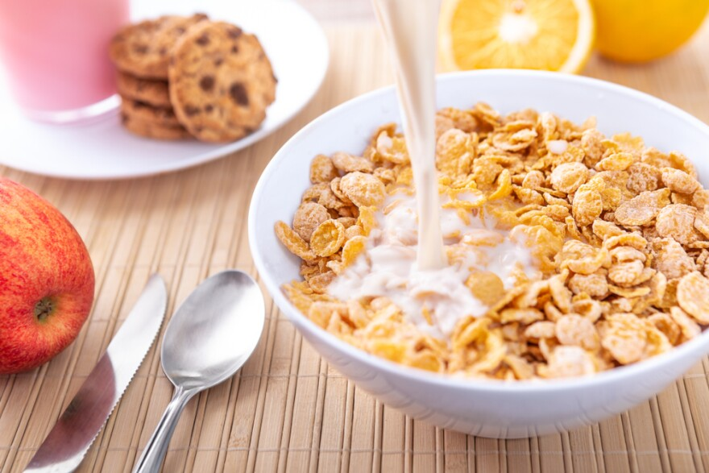

Cereal and Milk

Description
Return to your childhood with this timeless recipe. Bring back the days of waking up an eating a fresh bowl of cereal.
Ingredients
Steps
- Choose the cereal that you want to eat. This is likely the most difficult step of the journey.
- Carefully open the box so as not to tear the tab that you will use to close the box later on. Nothing is more frustrating than stale cereal.
- Open the bag without spilling any of the precious cereal on the floor.
- Pour the cereal into your bowl.
- Douse the cereal with your chosen milk. Add a little extra if you want to have extra at the end.
- Enjoy!